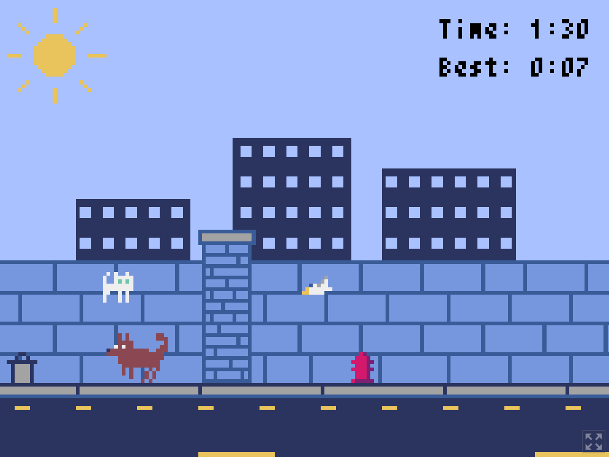

Webbsida: CV/Portfolio
Teknik: Vanilla HTML och CSS
Under min utbildning till .NET-utvecklare via JU/Campus Värnamo fick jag i uppdrag att bygga en
responsiv sida för CV och portfolio. Det är just denna sidan du nu besöker.
Följ denna
länk
för källkod på Github.
Datorspel: Bouncy Cat
Teknik: Python och ramverket Pyxel
När jag studerade Nätverksteknik sommaren 2025 lekte jag lite med Python på min fritid och gjorde
ett lite enklare datorspel. Spelet är en typ av endless runner där man spelar som en katt som
studsar sig genom världen. Spelet går ut på att överleva sålänge som möjligt utan att krocka
med varken föremål eller djur.

Spelet är mitt första objektorienterade program.
Artwork och animationer har jag gjort själv. Jag valde att låta spelet vara utan musik och ljud.
Följ denna
länk
för att spela spelet på Itch.io eller tryck
här
för att se källkoden på Github.